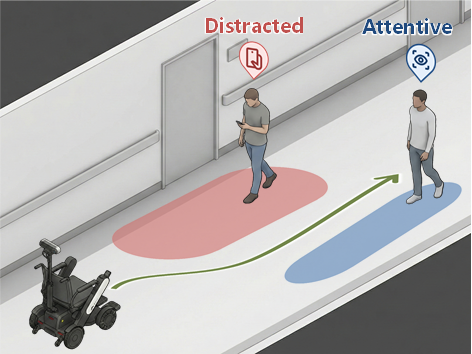

IEEE RO-MAN 2026（北九州市）で、スマートフォンを操作する歩行者の周囲を安全かつ効率的に走行する研究を発表しました。
News
7月13日〜17日にUTSおよびICC Sydneyで開催されたRobotics: Science and Systems 2026（RSS 2026）に参加しました。
IEEE RO-MAN 2026に論文が採択され、北九州市で発表する予定です。
日本ロボット学会誌に、輝翠の農作業支援ロボット「Adam」に関するインタビュー記事が掲載されました。
オーストラリア・シドニーのシドニー工科大学（UTS）で共同海外研究を開始しました。
スマートフォンに注意を奪われた歩行者を考慮した動的コストマップ調整の研究で、SI2025優秀発表賞を受賞しました。
自律移動ロボットのための3次元骨格情報に基づく歩行者の注意散漫状態検出について、RSJ2025で研究発表を行いました。
ロボティクスと人間中心システムについて意見交換するため、慶應義塾大学 高橋研究室を訪問しました。
歩行者の注意状態を考慮したコストマップ生成による衝突回避について、ROBOMECH2025でポスター発表を行いました。
「あるくメカトロウィーゴ」と歩む歩行ロボットの未来について、株式会社リビングロボットへのインタビュー記事が掲載されました。
Publications
学会発表と編集記事を掲載しています。最新の業績や発表資料は researchmap ↗ または Docswell ↗ からご覧ください。
International Presentation
02 items-

Safe and Efficient Navigation Considering Texting Pedestrians via Attention-Aware Cost-map Tuning
Shunya Tadano, Yusuke Tamura, A. A. Ravankar, and Yasuhisa Hirata
2026 IEEE International Conference on Robot and Human Interactive Communication (RO-MAN), Kitakyushu, Japan, Paper ID: WeD04.4.
-
Pedestrian Trajectory Prediction with Pose Estimation and Monte Carlo Dropout
Shunya Tadano, Yusuke Tamura, and Yasuhisa Hirata
2024 IEEE International Conference on Robotics and Automation, ThAL-EX.17.
Domestic Presentations
06 items-
スマートフォンに注意を奪われた歩行者を考慮した自律移動ロボットの動的コストマップ調整
歩きスマホ歩行者の注意状態を考慮した自律移動ロボットの動的なコストマップ調整
Shunya Tadano, Yusuke Tamura, and Yasuhisa Hirata
第26回計測自動制御学会システム・インテグレーション部門講演会、発表番号：1E3-09。
-
自律移動ロボットのための3次元骨格情報を用いた歩行者の注意散漫状態検出
自律移動ロボットのための3D骨格情報に基づく歩きスマホ検出
Shunya Tadano, Yusuke Tamura, and Yasuhisa Hirata
日本ロボット学会 第43回学術講演会、発表番号：3J3-03。
-
歩行者の注意状態を考慮したコストマップ生成による移動ロボットの衝突回避
歩行者の注意状態を考慮したコストマップ生成による移動ロボットの衝突回避
Shunya Tadano, Yusuke Tamura, and Yasuhisa Hirata
ロボティクス・メカトロニクス講演会2025、発表番号：2P1-E05。
-
不確実性を考慮した歩行者軌道予測への姿勢情報の統合
不確実性を考慮した歩行者軌道予測への姿勢情報の統合
Shunya Tadano, Yusuke Tamura, and Yasuhisa Hirata
ロボティクス・メカトロニクス講演会2024、発表番号：2P2-N01。
-
北極海氷調査用自律移動ロボットの開発
北極海氷調査自律移動ロボットの開発―氷雪上走行における検討と高精度測位システムの基礎的開発―
米倉 達郎, 古舘 守道, 只野 竣也, 菅 良太郎, 吉田 弘, 三好 扶
ロボティクス・メカトロニクス講演会2022、発表番号：1A1-L03。
-
海中アンテナの開発と極域探査ロボットへの応用
海中アンテナの開発とその極域探査ロボットへの応用
吉田 弘, 野一色 崇志, 高橋 応明, 屋比久 怜, 菅 良太郎, 米倉 達郎, 只野 竣也, 川村 昴, 松下 拓磨, 松井 康浩
電子情報通信学会技術研究報告、2022年。
Misc
03 items-
学生編集委員会企画：株式会社輝翠へのインタビュー
宇宙探査技術で農業課題を解決！輝翠の農作業支援AIロボット「Adam」の開発
Sena Ishii, Shinya Tajima, and Shunya Tadano
日本ロボット学会誌、第44巻第2号、158–161ページ。
-
株式会社リビングロボットへのインタビュー
リビングロボットに訊く！「あるくメカトロウィーゴ」と歩む未来
Shun Nagaoka, Shunya Tadano, Shinya Tajima, and Yuto Kemmotsu
日本ロボット学会誌、第43巻第4号、391–397ページ。
-
株式会社弘栄ドリームワークスへのインタビュー
株式会社弘栄ドリームワークス 最先端配管点検ロボット「配管くん」の秘密に迫る
Yuto Kemmotsu, Shunya Tadano, Shun Nagaoka, and Kohei Yamamoto
日本ロボット学会誌、第42巻第6号、543–547ページ。
Background
Education
-
博士後期課程
2025年—現在東北大学大学院工学研究科 ロボティクス専攻
研究：ソーシャルナビゲーションと歩行者軌道予測
-
修士課程（工学）
2023—2025東北大学
修士論文：視覚的注意と行動の不確実性を考慮した歩行者軌道予測
-
学士課程（工学）
2019—2023岩手大学
卒業論文：骨格推定を用いた片麻痺患者のナイフ操作支援システム
Career
-
シドニー工科大学 ロボティクス研究所 客員研究員
2026年3月—11月 -
機械システム統合プログラム（GP-Mech）
2024年4月—現在東北大学
Awards
-
優秀発表賞
2025年12月計測自動制御学会 システム・インテグレーション部門講演会2025
スマートフォンに注意を奪われた歩行者を考慮した自律移動ロボットの動的コストマップ調整
-
最優秀賞
2024年9月Boeing University Externship Summer Seminar 2024
Japan-WIDE 持続可能な航空燃料とインフラ開発
-
全国準優勝
2024年9月James Dyson Award 2024
ARALA — Additive Robotic Attachment for Lab Automation